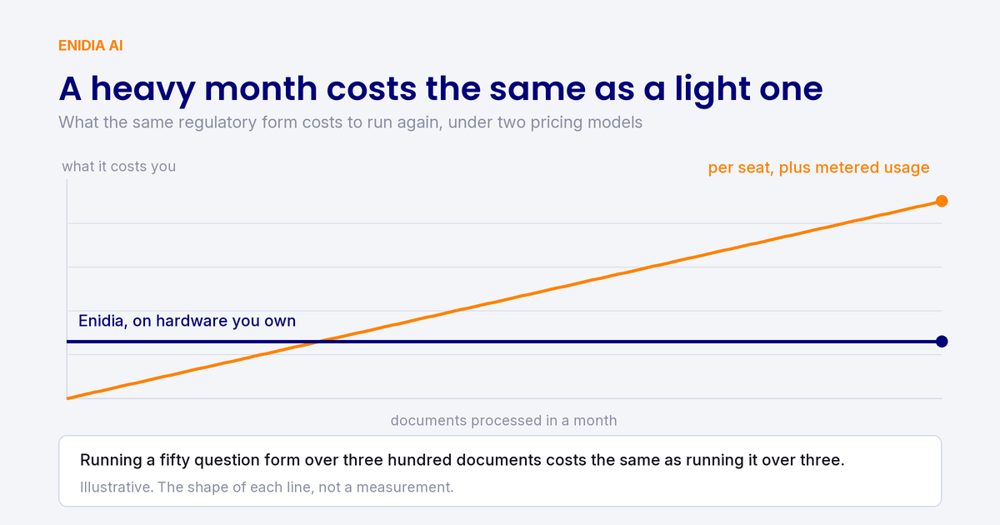

Analysis · European AI sovereignty
Europe will not win the data centre race. Our CTO argued in Warsaw it does not have to.

On 5 November, our CTO sat on a panel on innovation, regulation and technological sovereignty. His argument: Europe’s constraint is capital and compute, not the AI Act, and one way forward is to use models small enough to run on your own hardware. For a law firm or a fund administrator, that argument arrives as a procurement question.
On Thursday, 5 November, at Fabryka Norblina in Warsaw, our CTO Aleksander Smywiński-Pohl sat on the panel “Europa wobec rewolucji AI: między innowacją, regulacją a suwerennością technologiczną” at the NCBR conference “Jak robić naukę w erze AI”. The panel was moderated by Marek Ziemba, alongside Michał Kanownik, Michał Kosobudzki, Neil Micallef and Francisco Villaescusa-Navarro. The conference brought together 58 speakers to discuss how science, research and AI fit together. The question put to this panel was narrower: how can Europe continue to innovate and compete with the United States and China?
The room split on regulation
Two positions came out of the discussion.
The first: regulation is not what holds research back. Much research and development falls outside the AI Act altogether, and a product certified in the EU may be one a customer trusts more rather than less, at least when it falls into the high-risk category.
The second: the rules are too heavy, and Europe pays for them in speed.
Aleksander took neither side. His position was that regulation is not the primary concern at all. Access to capital and computing resources is.
You cannot copy the American plan
Following the US path requires investing billions of dollars in GPUs, and Europe is not making investments on that scale. That is the asymmetry, and no amount of deregulation closes it.
The useful part of the argument is what comes after it. Putting that capital into ever larger data centres may not be the best strategy even for the people who can afford it. Small local models can now compete with frontier models on a wide range of tasks, provided the surrounding system is tailored to the domain in which the AI is used.
That last condition is central to what our company does, so it is worth being concrete about it. A general-purpose model asked to complete a fifty-question regulatory form may produce fifty plausible answers. A smaller model, embedded in a system that understands the form, knows which documents answer which questions, and can identify unanswered questions, can produce fifty verifiable answers. Only one of those two things can be signed.
Where the policy argument becomes a procurement question
If you run a law firm or a fund administration business, the sovereignty debate raises a much more specific question: where do your clients’ documents go?
With a cloud-based legal AI tool, subscription documents, due diligence files, prospectuses and draft advice leave your premises and are processed on infrastructure owned by someone else. The US CLOUD Act lets US authorities compel a US provider to produce data it holds, including data held outside the United States. A Chinese-hosted service raises a similar question about foreign jurisdiction. Neither is a scandal. It is simply something you must be able to explain to clients, regulators and, increasingly, to your own insurer.
Open-weight models change that conversation because their published weights can be hosted locally. You host the file. The model itself does not require a connection to its developer's servers. The key question shifts from who developed the model to where it runs.
Enidia runs on the client’s own hardware, in the client’s own building. No document leaves. There is no per-token meter either, so a heavy month costs the same as a quiet one, and running a fifty-question form over three hundred documents costs the same as running it over three. Every run produces a certificate: each element, its state, its verbatim source and its locator. The certificate can go into the matter file, be shared with the client or be presented to a regulator. Answers come back as Found, Inferred or Absent, and we never fill a gap with something plausible.
The regulator is already asking the question. The CSSF’s annual report identifies hallucination, loss of human control and vendor lock-in among the risks AI poses to the financial sector. The CSSF also announced a survey of supervised firms on their use of AI. Every regulated firm in Luxembourg is going to have to describe the AI it uses and the control it keeps over it.
What we are not claiming
A small local model will not outperform a frontier model on open-ended tasks. If you want the best possible first draft of a memo, that is not what we built; Harvey or Legora may serve you better. Firms keep those and add us.
On-premises deployment also requires hardware. That entails capital expenditure and a procurement process, and for some firms it is a reason to say no. We would rather say so now than discover it in month three.
And the certificate does not remove the lawyer. It makes the review shorter. The partner still signs.
The short version
Europe is behind in the cloud race and will stay behind. That is why open-weight models running on hardware you own can be a position of strength rather than a consolation prize. It also happens to be the only position from which a law firm can use AI on a client matter and still answer the confidentiality question in one sentence.
If you want to see what that looks like on your own documents, we run a one-month pilot on non-confidential material. You can also explore the three agents and our Legal AI Verification Standard. To see what flat-rate costs could mean for your workload, try the cost calculator.
Try Enidia AI for free with your Google login.
Open app.enidia.ai